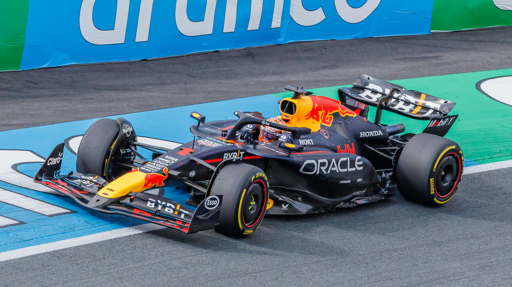
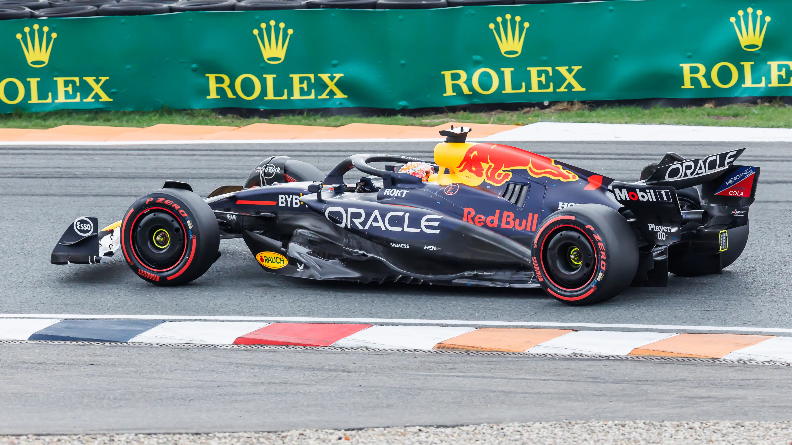
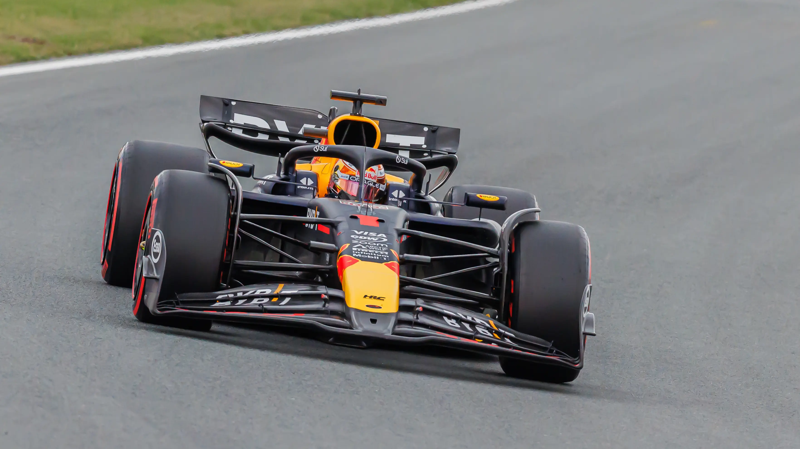

Max Verstappen v roce 2024
Informace
Základní informace
- Automobilový závodník ve Formuli 1 za tým Red Bull
- Čtyřnásobný mistr světa ve F1 v sezónách 2021-2024
- V roce 2022 získal jako první nizozemský sportovec cenu Laureus (sportovní Oscar) pro nejlepšího sportovce roku 2021
- Narození - 30. září 1997, Hasselt, Belgie
- Národnost: Nizozemsko
- Rodiče: Jos Verstappen (bývalý jezdec Formule 1), Sophie Kumpen (šampionka v motorkárách)
Formule 1
- Roky: 2015 až dosud
- Týmy: Toro Rosso (2015-2016), Red Bull (2016-dosud)
- Ve věku 4 let začal závodit na motorkárách na šampionátu Mini Junior
- V 15 letech vyhrál mistrovství světa třídy v nejvyšší motokárové kategorii - KZ1
- V roce 2014 závodil ve Formuli 3 za tým Van Amersfoort Racing
- V srpnu 2014 se stal členem Red Bull Junior Team
- O pár dní později byl ohlášen jezdcem Scuderie Toro Rosso pro sezónu 2015
- V Grand Prix Austrálie 2015 startoval jako nejmladší jezdec ve věku 17 let
- V roce 2016 po Grand Prix Ruska povýšil do hlavního týmu Red Bull Racing
- Grand Prix Španělska 2016 vyhrál a stal se nejmladším vítězem závodu
- V roce 2022 podepsal prodloužení smlouvy s Red Bull Racingem do roku 2028
- Celkem vyhrál 71 závodů, získal 48 pole position, zajel 36 nejrychlejších kol a 127 krát skončil mezi třemi nejlepšími


